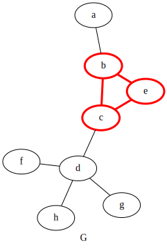
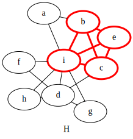
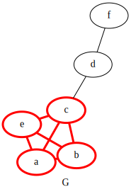
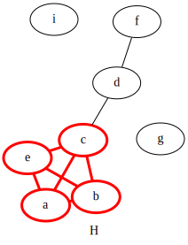
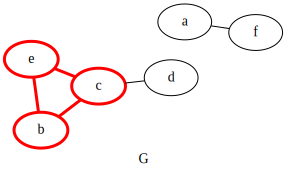
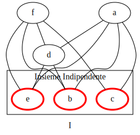

Un problema è \(NP\)-completo \(\iff\) è in \(NP\) e è \(NP\)-arduo.
Questo significa che ogni dimostrazione di \(NP\)-completezza è divisa in due parti:
Per la prima parte, basta mostrare che le istanze VERE (ogni problema definisce un linguaggio che decide se la soluzione data risolve il problema o meno) possono essere verificate in tempo polinomiale usando un certificato appropriato.
Per la seconda parte, bisogna dimostrare che il problema è \(NP\)-arduo. Questo, nella maggior parte dei casi, è fatto dimostrando che il problema in questione è almeno arduo quanto un altro problema \(NP\)-arduo.
Sia dato un grafo \(G = (V, E)\), con \(|V| = 2n\). Il problema \(HALF-CLIQUE\) consiste nel decidere se esiste una cricca di dimensione \(n\).
È facile vedere che il problema è \(\in NP\), in quanto data una sequenza di nodi è facile verificare in tempo polinomiale che sia una cricca.
Dobbiamo dimostrare che \(Clique \le_P Half-Clique\), ovvero dobbiamo dimostrare che per ogni grafo con una \(\frac{n}{2}\)-Cricca, si possono trovare delle prove (il certificato) che dimostrino effettivamente che quella cricca esista, e che armati di tale certificato è possibile verificare in tempo polinomiale che tale cricca esista.
Mostriamo che \(CLIQUE\) è riducibile a \(HALF-CLIQUE\), modificando in modo opportuno il grafo a seconda che la dimensione della \(k\)-Cricca sia minore di \(n\) oppure maggiore o uguale ad \(n\).
Supponiamo di avere un grafo \(G = (V, E)\), con \(|V| = 2n\).
se \(k \lt n\): aggiungiamo \(x\) nodi connessi a tutti gli altri nodi in \(G\), fino a soddisfare la relazione \(2n + x = 2(k + x) \rightarrow x = 2(n - k)\)
 
se \(k \ge n\) aggiungiamo \(x\) nodi sparsi (ovvero che non sono connessi a nessun nodi), in modo che la dimensione della \(k\)-Cricca fino a soddisfare la relazione \(2k = 2n + x \rightarrow x = 2(k - n)\)
 
In ogni caso in \(H\) c'è una mezza cricca \(\iff\) in \(G\) c'è una cricca.
\(DOUBLE-SAT\) è l’insieme delle formule logiche che ammettono almeno due interpretazioni distinte che soddisfano la formula.
È facile vedere che \(DOUBLE-SAT \in NP\): data la formula proposizionale \(\phi\) è sufficiente generare in modo non deterministico le due interpretazioni \(t_1\), \(t_2\) e verificare che queste siano distinte e che entrambe soddisfino \(\phi\), cosa che richiede tempo polinomiale.
Per dimostrare che \(DOUBLE-SAT\) è \(NP\)-arduo mostriamo una riduzione \(SAT \le DOUBLE-SAT\)
Data la formula \(\phi = (x_1, \dots , x_n)\) introduciamo la nuova variabile \(y\) e creiamo la formula
\[\phi' = \phi \land (y \lor \lnot y)\]
Se \(\phi\) appartiene a \(SAT\), allora \(\phi\) ha almeno un assegnamento soddisfacibile, e dunque \(\phi'\) ha sicuramente almeno due assegnamenti soddisfacibili in quanto possiamo assegnare a \(y\) il valore \(1\) o il valore \(0\) senza modificare la soddisfacibilità. Quindi \(\phi' \in DOUBLE-SAT\).
D'altra parte se \(\phi \not \in SAT\) allora chiaramente \(\phi'\) non ha alcun assegnamento soddisfacibile, e quindi \(\phi' \not \in DOUBLE-SAT\).
In ogni caso \(\phi' \in DOUBLE-SAT \iff \phi \in SAT\).
Il punto è realizzare che se un grafo ha una cricca di dimensione \(k\), il grafo inverso ha un \(IS\) di dimensione \(k\).
Una cricca di dimensione \(k\) significa che \(k\) nodi sono tutti connessi tra di loro. Nel grafo inverso questi \(k\) nodi non hanno archi che li uniscono quindi sono per definizione un insieme indipendente.
Dunque, l'algoritmo polinomiale cercato è semplicemente quello che inverte il grafo.
 
Set Cover: Dato un insieme \(U\), una collezione \(A\) di sottoinsiemi di \(U\) e un intero \(k\) determinare se esiste un sottoinsieme di \(A\) che sia un ricoprimento per \(U\).
Considerando \(U\) come un insieme di archi si costruisce il grafo \(G\) iterando sugli elementi di \(U\) in tempo lineare nel numero degli archi.
Infine si lancia la computazione di \(VC(k)\). \(VC\) ritorna vero se e solo se esiste in \(A\) un sottoinsieme che ricopre \(U\) .
È più semplice provare il contrario ovvero:
\[NP = P \implies coNP = NP\]
Assumiamo quindi che \(P = NP\) , dunque
per ogni \(L \in NP\) abbiamo che \(L \in P\) e dato che i linguaggi in \(P\) sono chisi per complementazione abbiamo \(\overline{L} \in P\) e dunque \(L \in coNP\)
per ogni \(L \in coNP\) abbiamo che \(\overline{L} \in P\) e dato che \(P\) è chiuso per la complementazione \(L \in P\) e quindi \(L \in NP\)
Remark: Inoltre se \(P = NP\) tutta la gerarchia polinomiale collasserebbe sull'ultimo livello il che implica \(P = NP = coNP = PH\) .